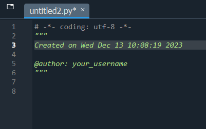

1 + 1
2 * 3
4 / 10
5 ** 225The next workshop is on Fri Feb 27 at 09:30 AM.
Book in to the next offering now.
Alternatively, check our calendar for future events.
This hands-on programming course – directed at beginners – will get you started on using Python 3 and the program Spyder to import, explore, analyse and visualise data.
The easiest way to use Python 3 and Spyder is to install the Anaconda Distribution, a data science platform for Windows, Linux and macOS.
Open the Anaconda Navigator (you might have to run anaconda-navigator from a terminal on Linux), and launch Spyder. On some operating systems, you might be able to find Spyder directly in your applications.
Python is a programming language that can be used to build programs (i.e. a “general programming language”), but it can also be used to analyse data by importing a number of useful modules.
We are using Spyder to interact with Python more comfortably. If you have used RStudio to interact with R before, you should feel right at home: Spyder is a program designed for doing data science with Python.
We will start by using the console to work interactively. This is our direct line to the computer, and is the simplest way to run code. Don’t worry about any unfamiliar language, fonts or colours - we can ignore most of it for now - all you need to know is that
In [1]: ... is code that we’ve sent to the computer, andOut[1]: ... is its response.To start with, we can use Python like a calculator. Type the following commands in the console, and press Enter to execute them:
1 + 1
2 * 3
4 / 10
5 ** 225After running each command, you should see the result as an output.
Most programming languages are like spoken language in that they have nouns and verbs - you have “things” and they “do things”. In Python, we have variables and functions. We’ll look first at variables, the nouns of Python, which store data.
To create a variable, we choose its name (e.g. favNumber) and assign (=) it a value (e.g. 42):
example_int = 42You can then retrieve the value by running the variable name on its own:
example_int42Let’s create more variables. We can use the variable names in place of their values, so we can perform maths:
example_float = 5.678
example_int * example_float238.476So far, we’ve only looked at numbers. If you click on the “variable explorer” tab, you should see two variables.
Notice that the “Type” of example_int is int, while the other is float. These are different variable types and can operate differently. int means integer, and corresponds to whole numbers, while float stands for floating point number, meaning decimals. You may occasionally encounter errors where you can only use one type.
Even simpler than integers is the boolean type. These are either 1 or 0 (True or False), representing a single binary unit (bit). Don’t be fooled by the words, these work like numbers: True + True gives 2.
example_bool = TrueIn Python, the boolean values
TrueandFalsemust begin with a capital letter.
Let’s look at variable types which aren’t (necessarily) numbers. Sequences are variables which store more than one data point. For example, strings store a sequence of characters and are created with quotation marks '<insert string>' or "<insert string>":
example_string = 'Hello world!'We can also create lists, which will store several variables (not necessarily of the same type). We need to use square brackets for that:
example_list = [38, 3, 54, 17, 7]
diverse_list = [3, 'Hi!', 9.0]Lists are very flexible as they can contain any number of items, and any type of data. You can even nest lists inside a list, which makes for a very flexible data type.
Operations on sequences are a bit different to numbers. We can still use + and *, but they will concatenate (append) and duplicate, rather than perform arithmetic.
example_string + ' How are you?'
example_list + diverse_list
3 * example_list[38, 3, 54, 17, 7, 38, 3, 54, 17, 7, 38, 3, 54, 17, 7]However, depending on the variable, some operations won’t work:
example_string + example_int--------------------------------------------------------------------------- TypeError Traceback (most recent call last) Cell In[9], line 1 ----> 1 example_string + example_int TypeError: can only concatenate str (not "int") to str
There are other data types like tuples, dictionaries and sets, but we won’t look at those in this session. Here’s a summary of the ones we’ve covered:
| Category | Type | Short name | Example | Generator |
|---|---|---|---|---|
| Numeric | Integer | int |
3 |
int() |
| Numeric | Floating Point Number | float |
4.2 |
float() |
| Numeric | Boolean | bool |
True |
bool() |
| Sequence | String | str |
'A sentence ' |
" " or ' ' or str() |
| Sequence | List | list |
['apple', 'banana', 'cherry'] |
[ ] or list() |
The generator commands are new. We use these to manually change the variable type. For example,
int(True)1yields 1, converting a boolean into an integer. These commands are functions, as opposed to variables - we’ll look at functions a bit later.
We can access part of a sequence by indexing. Sequences are ordered, starting at 0, so the first element has index 0, the second index 1, the third 2 and so on. For example, see what these commands return:
example_string[0]
example_string[6]
example_list[4]7If you want more than one element in a sequence, you can slice. Simple slices specify a range to slice, from the first index to the last, but not including the last. For example:
example_list[0:4][38, 3, 54, 17]That command returns elements from position 0 up to - but not including! - position 4.
So far, we’ve been working in the console, our direct line to the computer. However, it is often more convenient to use a script. These are simple text files which store code and run when we choose. They are useful to
Let’s create a folder system to store our script in by creating a project.
Projects > New project... and name your project, perhaps “python_fundamentals”.File > New file... or the new file button .You should now see a script on the left panel in Spyder, looking something like this:

Try typing a line of code in your new script, such as
1 + 12Press F9 to run each line, or ctrl+enter for the whole script. You should see something like the following appear in the console (depending on how you ran it):
We’ll work out of a script for the rest of the session. Don’t forget to save your script by pressing ctrl+S or the save button .
Functions are little programs that do specific jobs. These are the verbs of Python, because they do things to and with our variables. Here are a few examples of built-in functions:
example_list = [1,2,3,4]
len(example_list)
min(example_list)
max(example_list)
sum(example_list)
round(5.123)5Functions always have parentheses after their name, and they can take one or several arguments, or none at all, depending on what they can do, and how the user wants to use them.
Here, we use two arguments to modify the default behaviour of the round() function:
round(5.123, 2)5.12Notice how Spyder gives you hints about the available arguments after typing the function name?
Operators are a special type of function in Python with which you’re already familiar. The most important is =, which assigns values to variables. Here is a summary of some important operators, although there are many others:
| Operator | Function | Description | Example command |
|---|---|---|---|
| = | Assignment | Assigns values to variables | a = 7 |
| # | Comment | Excludes any following text from being run | # This text will be ignored by Python |
| Operator | Function | Description | Example command | Example output |
|---|---|---|---|---|
| + | Addition | Adds or concatenates values, depending on variable types | 7 + 3 or "a" + "b" |
10 or 'ab' |
| - | Subtraction | Subtracts numerical values | 8 - 3 |
5 |
| * | Multiplication | Multiplies values, depending on variable types | 7 * 2 or "a" * 3 |
14 or 'aaa' |
| / | Division | Divides numerical vlues | 3 / 4 |
0.75 |
| ** | Exponentiation | Raises a numerical value to a power | 7 ** 2 |
49 |
| % | Remainder | Takes the remainder of numerical values | 13 % 7 |
6 |
| Operator | Function | Description | Example command | Example output |
|---|---|---|---|---|
| == | Equal to | Checks whether two variables are the same and outputs a boolean | 1 == 1 |
True |
| != | Not equal to | Checks whether two variables are different | '1' != 1 |
True |
| > | Greater than | Checks whether one variable is greater than the other | 1 > 1 |
False |
| >= | Greater than or equal to | Checks whether greater than (>) or equal to (==) are true | 1 >= 1 |
True |
| < | Less than | Checks whether one variable is less than the other | 0 < 1 |
True |
| <= | Less than or equal to | Checks whether less than (<) or equal to (==) are true | 0 <= 1 |
True |
To find help about a function, you can use the help() function, or a ? after a function name:
help(max)
print?Help on built-in function max in module builtins:
max(...)
max(iterable, *[, default=obj, key=func]) -> value
max(arg1, arg2, *args, *[, key=func]) -> value
With a single iterable argument, return its biggest item. The
default keyword-only argument specifies an object to return if
the provided iterable is empty.
With two or more arguments, return the largest argument.
In Spyder, you can use the Ctrl + I keyboard shortcut to open the help in a separate pane.
The help information can often be dense and difficult to read at first, taking some practice. In the next session we look closer at interpreting this documentation, one of the most important Python skills.
For a comprehensive manual, go to the official online documentation. For questions and answers, typing the right question in a search engine will usually lead you to something helpful. If you can’t find an answer, StackOverflow is a great Q&A community.
In this first activity, write a program which takes an age in years and outputs how many minutes they’ve lived for. Note that
\[\text{Age (minutes)} = \text{Age (years)} \times 365 \times 24 \times 60\]
Steps
Note: if you want to print a number (e.g. the age), the easiest way is to send multiple arguments to the print function. For example,
print("The first number is", 1)
If this is too easy, try to get the user to provide their age themselves with the command int(input(...)). Make sure to use int(), otherwise the string multiplication will crash Spyder. You’ll want the documentation for input().
We have three lines of code corresponding to the steps above:
### Age in minutes calculator
# Input age
age_years = 56
# Calculate age in mins
age_mins = age_years * 365 * 24 * 60
# Print result
print("You have lived for", age_mins, "minutes!")You have lived for 29433600 minutes!To include the input() command,
### Age in minutes calculator
# Input age
age_years = int(input("What is your age? "))
# Calculate age in mins
age_mins = age_years * 365 * 24 * 60
# Print result
print("You have lived for", age_mins, "minutes!")Python is set apart from other languages by the scale of its community packages and the ease with which you import them. While you could code everything you need from scratch, it’s often more effective to import someone else’s predefined functions.
Python comes with a number of pre-installed packages, so they’re already on your computer. However, your specific Python application doesn’t have access to them until they’re imported:
import mathThe module math brings in some mathematics constants and functions. For example, you will get an error if you run pi on its own, but we can access the constant using the module:
math.pi
2*math.pi
math.cos(math.pi)-1.0Note that we use a period . in order to access objects inside the module. In general, we use periods in Python to access objects stored inside other objects.
Some modules have long names and use abbreviated nicknames when imported.
import math as m
m.pi3.141592653589793Here the module math is stored as m in Python.
Where this naming is used, it is usually the standard, and sharing code with different (including original/full) module names will not be compatible with other programmers.
There are hundreds of thousands of external packages available, and Anaconda comes with the most common. For example, the numpy module, which enables numerical methods in Python.
You might recall that multiplication for sequences replicates them. This makes multiplying numeric lists unexpected:
3 * [1,2,3][1, 2, 3, 1, 2, 3, 1, 2, 3]What if we wanted to multiply each element by 3? Well, numpy has a variable where this does happen: the array. To turn a list into an array, use the np.array() function
import numpy as np
example_array = np.array([1,2,3])
3 * example_arrayarray([3, 6, 9])That works well!
Some popular packages include
| Package | Install command | Import command | Description |
|---|---|---|---|
| NumPy | pip/conda install numpy |
import numpy as np |
A numerical Python package, providing mathematical functions and constants, vector analysis, linear algebra etc. |
| Pandas | pip/conda install pandas |
import pandas as pd |
Panel Data - data transformation, manipulation and analysis |
| Matplotlib | pip/conda install matplotlib |
import matplotlib.pyplot as plt |
Mathematical ploting library, a popular visualisation tool. Note that there are other ways to import it, but the .pyplot submodule as plt is most common. |
| Seaborn | pip/conda install seaborn |
import seaborn as sns |
Another visualisation tool, closer to ggplot2 in R, built upon a matplotlib framework. |
| SciPy | pip/conda install scipy |
import scipy or import scipy as sp |
A scientific Python package with algorithms and models for analysis and statistics. |
| Statsmodels | pip/conda install statsmodels |
import statsmodels.api as sm and/or import statsmodels.tsa.api as tsa |
Statistical modelling. The first import sm is for cross-sectional models, while tsa is for time-series models. |
| Requests | pip/conda install requests |
import requests |
Make HTTP (internet) requests. |
| Beautiful Soup | pip/conda install beautifulsoup4 |
from bs4 import BeautifulSoup |
Collect HTML data from websites. |
Most external packages do not get shipped with Anaconda, and you’ll need to install these yourself.
condaIf you are using Anaconda, then the recommended installation method is using the conda command, which installs from Anaconda’s package database:
conda install numpyIf you’ve got Spyder running, you’ll need to restart the kernel. In the console, press the options button (three horizontal lines) > restart kernel.
SyntaxError: invalid syntax
If this doesn’t work for you, try using !conda install numpy - using an exclamation mark ! sends your command straight to your operating system shell.
If that doesn’t work, try using conda install numpy from an Anaconda prompt.
pipIf you are not using Anaconda, then the most common way to install a package is using the command pip, which installs packages from the Python Package Index (PyPI)
pip install numpySyntaxError: invalid syntax
If this doesn’t work for you, try using !pip install numpy - using an exclamation mark ! sends your command straight to your operating system shell.
If that doesn’t work, try using pip install numpy from an command prompt.
In this final activity, we’re going to create some sample data and visualise it.
Our goal is to import and visualise random BMI data
We’ll complete this in two parts. Before we begin, we need to set things up by importing the modules we need
import pandas as pd
import seaborn as snsIf importing any of these causes an error, it could be because you haven’t installed it yet. See above for information on how to do so.
Before we begin this activity we should bring in the data. To do this, we use the pd.read_csv() function, specifying the file path as the first argument (this can be a URL), and store it in a variable (typically df). For example,
df = pd.read_csv("insert_filepath_here")Today’s data is five (random) people’s height and weight. You can download it here.
df = pd.read_csv("BMI_data.csv")For the first part of the challenge, you’ll need to compute each person’s BMI, and store it in a new column. For reference, we access columns by indexing based on their name, e.g. df["Weight"] is the Weight column. To make a new column, we pretend that it already exists and assign into it. For example, to convert from kilograms to pounds,
# Create a new column called Weight (lb) and store the weight in pounds
df["Weight (lb)"] = df["Weight"]*2.205To compute the BMIs, make another new column and use the following formula to calculate the BMI.
\[ \text{BMI} = \frac{\text{Weight (kg)}}{(\text{Height (m)})^2} \]
It should look something like
df["BMI"] = ...Hint: \(x^2\) is
x**2
Once you’ve done these steps, you should see the following:
| Names | Height | Weight | Weight (lb) | BMI | |
|---|---|---|---|---|---|
| 0 | Alice | 1.90 | 94 | 207.27 | 26.038781 |
| 1 | Bob | 1.81 | 102 | 224.91 | 31.134581 |
| 2 | Charlie | 1.87 | 108 | 238.14 | 30.884498 |
| 3 | Dilsah | 1.88 | 84 | 185.22 | 23.766410 |
| 4 | Eliza | 1.68 | 108 | 238.14 | 38.265306 |
One solution could be the following:
# Import packages
import pandas as pd
import seaborn as sns
# Import data - don't forget to change the file path as you need
df = pd.read_csv("BMI_data.csv")
# Example - create a new column called Weight (lb) and store the weight in pounds
df["Weight (lb)"] = df["Weight"]*2.205
# Create BMI column
df["BMI"] = df["Weight"] / (df["Height"]**2)
# Look at the data
dfTo visualise the data, we can use the seaborn module, with the function sns.catplot( ... ). Inside the function, we’ll need to specify the x and y values, and if we specifically want a bar plot, kind as well. Use the help() documentation to see if you can visualise the data we just created. See if you can produce something like the following plot:

You’ll need to start with
sns.catplot(data = df, x = ...)Hint: You only need to use the
data =,x =,y =andkind =parameters, so try figure out what they require!
The plot above is produced with the code
# Visualise
sns.catplot(data = df, x = "Names", y = "BMI", kind = "bar")Your project can be reopened from the “Projects” menu in Spyder.
By default, your variables are not saved, which is another reason why working with a script is important: you can execute the whole script in one go to get everything back. You can however save your variables as a .spydata file if you want to (for example, if it takes a lot of time to process your data).
Today we looked at a lot of Python features, so don’t worry if they haven’t all sunk in. Programming is best learned through practice, so keep at it! Here’s a rundown of the concepts we covered
| Concept | Desctiption |
|---|---|
| The console vs scripts | The console is our window into the computer, this is where we send code directly to the computer. Scripts are files which we can write, edit, store and run code, that’s where you’ll write most of your Python. |
| Variables | Variables are the nouns of programming, this is where we store information, the objects and things of our coding. They come in different types like integers, strings and lists. |
| Indexing | In order to access elements of a sequence variable, like a list, we need to index, e.g. myList[2]. Python counts from 0. |
| Functions | Functions are the verbs of programming, they perform actions on our variables. Call the function by name and put inputs inside parentheses, e.g. round(2.5) |
| Help | Running help( ... ) will reveal the help documentation about a function or type. |
| Conditionals | if, elif and else statements allow us to run code if certain conditions are true, and skip it otherwise. |
| Loops | while loops will repeatedly run code until a condition is no longer true, and for loops will iterate through a variable |
| Packages | We can bring external code into our environment with import .... This is how we use packages, an essential for Python. Don’t forget to install the package first! |
Thanks for completing this introductory session to Python! You’re now ready for our next session, Data Transformation, which looks at using the pandas package in greater depth.
Before you go, don’t forget to check out the Python User Group, a gathering of Python users at UQ.
Finally, if you need any support or have any other questions, shoot us an email at training@library.uq.edu.au.